<mat-toolbar color="primary">
  <a routerLink=""><button mat-button disabled color="primary">
          
  </button></a>
  <a routerLink="/"><button mat-flat-button color="primary">Prox Web</button></a>

  <span class="spacer"></span>

  <a routerLink="help"><button mat-flat-button color="primary">Help</button></a>
</mat-toolbar>


<!-- main content container -->
<mat-sidenav-container class="fullscreen">
  <div class="container">
    <router-outlet></router-outlet>
  </div>  
</mat-sidenav-container>